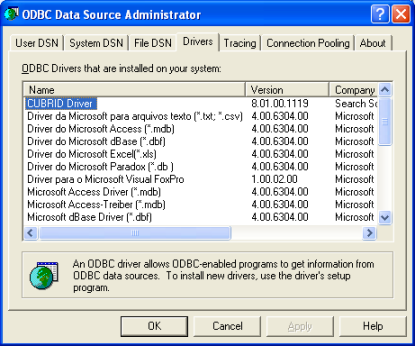
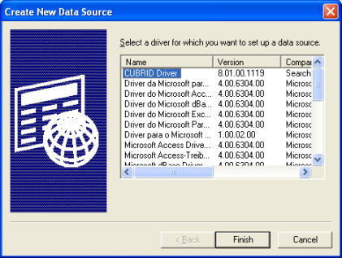
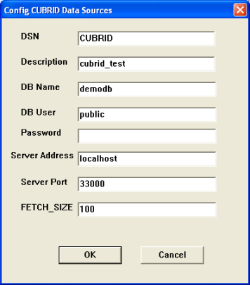
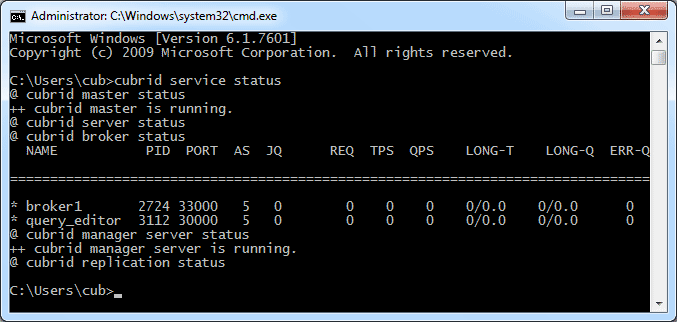
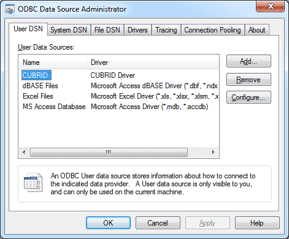
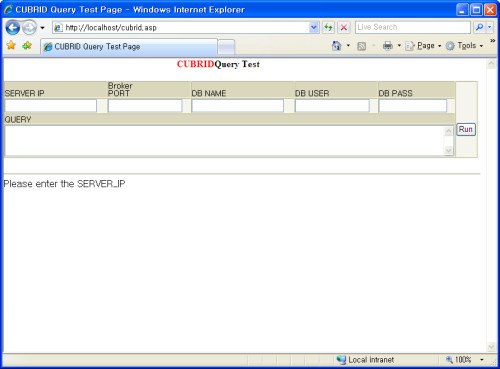

ODBC Driver
CUBRID ODBC driver supports ODBC version 3.52. It also ODBC core and some parts of Level 1 and Level 2 API. Because CUBRID ODBC driver has been developed based on the ODBC Spec 3.x, backward compatibility is not completely ensured for programs written based on the ODBC Spec 2.x.
CUBRID ODBC driver is written based on CCI API, but it’s not affected by CCI_DEFAULT_AUTOCOMMIT exceptionally.
Note
ODBC is not affected by CCI_DEFAULT_AUTOCOMMIT is from 9.3 version. In the previous versions, you should set CCI_DEFAULT_AUTOCOMMIT as OFF.
Data Type Mapping Between CUBRID and ODBC
The following table shows the data type mapping relationship between CUBRID and ODBC.
CUBRID Data Type |
ODBC Data Type |
|---|---|
CHAR |
SQL_CHAR |
VARCHAR |
SQL_VARCHAR |
STRING |
SQL_LONGVARCHAR |
BIT |
SQL_BINARY |
VARYING BIT |
SQL_VARBINARY |
NUMERIC |
SQL_NUMERIC |
INT |
SQL_INTEGER |
SHORT |
SQL_SMALLINT |
FLOAT |
SQL_FLOAT |
DOUBLE |
SQL_DOUBLE |
BIGINT |
SQL_BIGINT |
DATE |
SQL_TYPE_DATE |
TIME |
SQL_TYPE_TIME |
TIMESTAMP |
SQL_TYPE_TIMESTAMP |
DATETIME |
SQL_TYPE_TIMESTAMP |
OID |
SQL_CHAR(32) |
SET, MULTISET, SEQUENCE |
SQL_VARCHAR(MAX_STRING_LENGTH) |
Configuring and Environment ODBC
Requirements
CUBRID 2008 R4.4 (8.4.4) or later (32-bit or 64-bit)
Configuring CUBRID ODBC Driver
CUBRID ODBC driver is automatically installed upon CUBRID installation. You can check whether it is properly installed in the [Control Panel] > [Administrative Tools] > [Data Source (ODBC)] > [Drivers] tab.

Choosing 32-bit ODBC driver on 64-bit Windows
To run 32-bit application, 32-bit ODBC driver is required. If you have to choose 32-bit ODBC driver on 64-bit Windows, run C:WINDOWSSysWOW64odbcad32.exe .
Microsoft Windows 64-bit platform support the environment to run 32-bit application on 64-bit environment, which is called WOW64 (Windows-32-on-Windows-64). This environment maintains its own copy of the registry that is only for 32-bit applications.
Configuring DSN
After you check the CUBRID ODBC driver installed, configure DSN as a database where the applications are trying to connect. To configure, click the [Add] button in the ODBC Data Source Administrator dialog box. Then, the following dialog box will appear. Select “CUBRID Driver” and then click the [Finish] button.

In the [Config CUBRID Data Sources] dialog box, enter information as follows:

DSN : The name of a source data
DB Name : The name of a database to be connected
DB User : The name of a database user
Password : The password of a database user
Server Address : The host address of a database. The value should be either localhost or the IP address of other server.
Server Port : The number of a broker port. You can check the CUBRID broker port number in the cubrid_broker.conf file. The default value is 33,000. To verify the port number, check the BROKER_PORT value in the cubrid_broker.conf file or enter the cubrid service status in the command prompt. The result will be displayed as follows:

FETCH_SIZE : A value configures the number of records fetched from server whenever the cci_fetch () function of CCI library (which CUBRID ODBC driver internally uses) is called.
After you filled out every field, click the [OK] button. You will notice that data source is added in the [User Data Sources] as shown below.

Connecting to a Database Directly without DSN
It is also possible to connect to a CUBRID database directly in the application source code by using the connecting string. Below shows the example of connection string.
conn = "driver={CUBRID Driver};server=localhost;port=33000;uid=dba;pwd=;db_name=demodb;"
Note
Make sure that your database is running before you try to connect to a CUBRID database. Otherwise, you will receive an error indicating that ODBC call has failed. To start the database called demodb, enter cubrid server start demodb in the command prompt.
ODBC Programming
Configuring Connection String
When you are programming CUBRID ODBC, write the connection strings as follows:
Category |
Example |
Description |
|---|---|---|
Driver |
CUBRID Driver Unicode |
Driver name |
UID |
PUBLIC |
User ID |
PWD |
xxx |
Password |
FETCH_SIZE |
100 |
Fetch size |
PORT |
33000 |
The broker port number |
SERVER |
127.0.0.1 |
The IP address or the host name of a CUBRID broker server |
DB_NAME |
demodb |
Database name |
DESCRIPTION |
cubrid_test |
Description |
CHARSET |
utf-8 |
Character set |
The following shows the result of using connection strings above.
"DRIVER={CUBRID Driver Unicode};UID=PUBLIC;PWD=xxx;FETCH_SIZE=100;PORT=33000;SERVER=127.0.0.1;DB_NAME=demodb;DESCRIPTION=cubrid_test;CHARSET=utf-8"
If you use UTF-8 unicode, install a driver for unicode and input the driver name in the connection string as “Driver={CUBRID Driver Unicode}”. Unicode is only supported in 9.3.0.0002 or higher version of CUBRID ODBC driver.
Note
Because a semi-colon (;) is used as a separator in URL string, it is not allowed to use a semi-colon as parts of a password (PWD) when specifying the password in connection strings.
The database connection in thread-based programming must be used independently each other.
In autocommit mode, the transaction is not committed if all results are not fetched after running the SELECT statement. Therefore, although in autocommit mode, you should end the transaction by executing COMMIT or ROLLBACK if some error occurs during fetching for the resultset.
ASP Sample Program
In the virtual directory where the ASP sample program runs, right-click “Default Web Site” and click [Properties].
In the picture above, if you select (All Unassigned) from the [IP Address] dropdown list under [Web Site Identification], it is recognized as localhost. If you want to see the sample program through a specific IP address, make an IP address recognize a directory as a virtual directory and register the IP address in the registration information.
Create the below code as cubrid.asp and store it in a virtual directory.
<HTML>
<HEAD>
<meta http-equiv="Content-Type" content="text/html; charset=EUC-KR">
<title>CUBRID Query Test Page</title>
</HEAD>
<BODY topmargin="0" leftmargin="0">
<table border="0" width="748" cellspacing="0" cellpadding="0">
<tr>
<td width="200"></td>
<td width="287">
<p align="center"><font size="3" face="Times New Roman"><b><font color="#FF0000">CUBRID</font>Query Test</b></font></td>
<td width="200"></td>
</tr>
</table>
<form action="cubrid.asp" method="post" >
<table border="1" width="700" cellspacing="0" cellpadding="0" height="45">
<tr>
<td width="113" valign="bottom" height="16" bgcolor="#DBD7BD" bordercolorlight="#FFFFCC"><font size="2">SERVER IP</font></td>
<td width="78" valign="bottom" height="16" bgcolor="#DBD7BD" bordercolorlight="#FFFFCC"><font size="2">Broker PORT</font></td>
<td width="148" valign="bottom" height="16" bgcolor="#DBD7BD" bordercolorlight="#FFFFCC"><font size="2">DB NAME</font></td>
<td width="113" valign="bottom" height="16" bgcolor="#DBD7BD" bordercolorlight="#FFFFCC"><font size="2">DB USER</font></td>
<td width="113" valign="bottom" height="16" bgcolor="#DBD7BD" bordercolorlight="#FFFFCC"><font size="2">DB PASS</font></td>
<td width="80" height="37" rowspan="4" bordercolorlight="#FFFFCC" bgcolor="#F5F5ED">
<p><input type="submit" value="Run" name="B1" tabindex="7"></p></td>
</tr>
<tr>
<td width="113" height="1" bordercolorlight="#FFFFCC" bgcolor="#F5F5ED"><font size="2"><input type="text" name="server_ip" size="20" tabindex="1" maxlength="15" value="<%=Request("server_ip")%>"></font></td>
<td width="78" height="1" bordercolorlight="#FFFFCC" bgcolor="#F5F5ED"><font size="2"><input type="text" name="cas_port" size="15" tabindex="2" maxlength="6" value="<%=Request("cas_port")%>"></font></td>
<td width="148" height="1" bordercolorlight="#FFFFCC" bgcolor="#F5F5ED"><font size="2"><input type="text" name="db_name" size="20" tabindex="3" maxlength="20" value="<%=Request("db_name")%>"></font></td>
<td width="113" height="1" bordercolorlight="#FFFFCC" bgcolor="#F5F5ED"><font size="2"><input type="text" name="db_user" size="15" tabindex="4" value="<%=Request("db_user")%>"></font></td>
<td width="113" height="1" bordercolorlight="#FFFFCC" bgcolor="#F5F5ED"><font size="2"><input type="password" name="db_pass" size="15" tabindex="5" value="<%=Request("db_pass")%>"></font></td>
</tr>
<tr>
<td width="573" colspan="5" valign="bottom" height="18" bordercolorlight="#FFFFCC" bgcolor="#DBD7BD"><font size="2">QUERY</font></td>
</tr>
<tr>
<td width="573" colspan="5" height="25" bordercolorlight="#FFFFCC" bgcolor="#F5F5ED"><textarea rows="3" name="query" cols="92" tabindex="6"><%=Request("query")%></textarea></td>
</tr>
</table>
</form>
<hr>
</BODY>
</HTML>
<%
' get DSN and SQL statement.
strIP = Request( "server_ip" )
strPort = Request( "cas_port" )
strUser = Request( "db_user" )
strPass = Request( "db_pass" )
strName = Request( "db_name" )
strQuery = Request( "query" )
if strIP = "" then
Response.Write "Input SERVER_IP."
Response.End ' exit if no SERVER_IP's input.
end if
if strPort = "" then
Response.Write "Input port number."
Response.End ' exit if no Port's input.
end if
if strUser = "" then
Response.Write "Input DB_USER."
Response.End ' exit if no DB_User's input.
end if
if strName = "" then
Response.Write "Input DB_NAME"
Response.End ' exit if no DB_NAME's input.
end if
if strQuery = "" then
Response.Write "Input the query you want"
Response.End ' exit if no query's input.
end if
' create connection object.
strDsn = "driver={CUBRID Driver};server=" & strIP & ";port=" & strPort & ";uid=" & strUser & ";pwd=" & strPass & ";db_name=" & strName & ";"
' DB connection.
Set DBConn = Server.CreateObject("ADODB.Connection")
DBConn.Open strDsn
' run SQL.
Set rs = DBConn.Execute( strQuery )
' show the message by SQL.
if InStr(Ucase(strQuery),"INSERT")>0 then
Response.Write "A record is added."
Response.End
end if
if InStr(Ucase(strQuery),"DELETE")>0 then
Response.Write "A record is deleted."
Response.End
end if
if InStr(Ucase(strQuery),"UPDATE")>0 then
Response.Write "A record is updated."
Response.End
end if
%>
<table>
<%
' show the field name.
Response.Write "<tr bgColor=#f3f3f3>"
For index =0 to ( rs.fields.count-1 )
Response.Write "<td><b>" & rs.fields(index).name & "</b></td>"
Next
Response.Write "</tr>"
' show the field value
Do While Not rs.EOF
Response.Write "<tr bgColor=#f3f3f3>"
For index =0 to ( rs.fields.count-1 )
Response.Write "<td>" & rs(index) & "</td>"
Next
Response.Write "</tr>"
rs.MoveNext
Loop
%>
<%
set rs = nothing
%>
</table>
You can check the result of the sample program by connecting to http://localhost/cubrid.asp. When you execute the ASP sample code above, you will get the following output. Enter an appropriate value in each field, enter the query statement in the Query field, and click [Run]. The query result will be displayed at the lower part of the page.

ODBC API
For ODBC API, see ODBC API Reference ( https://docs.microsoft.com/en-us/sql/odbc/reference/syntax/odbc-api-reference?view=sql-server-ver15 ) on the MSDN page. See the table below to get information about the list of functions, ODBC Spec version, and compatibility that CUBRID supports.
API |
Version Introduced |
Standards Compliance |
Support |
|---|---|---|---|
SQLAllocHandle |
3.0 |
ISO 92 |
YES |
SQLBindCol |
1.0 |
ISO 92 |
YES |
SQLBindParameter |
2.0 |
ODBC |
YES |
SQLBrowseConnect |
1.0 |
ODBC |
NO |
SQLBulkOperations |
3.0 |
ODBC |
YES |
SQLCancel |
1.0 |
ISO 92 |
YES |
SQLCloseCursor |
3.0 |
ISO 92 |
YES |
SQLColAttribute |
3.0 |
ISO 92 |
YES |
SQLColumnPrivileges |
1.0 |
ODBC |
NO |
SQLColumns |
1.0 |
X/Open |
YES |
SQLConnect |
1.0 |
ISO 92 |
YES |
SQLCopyDesc |
3.0 |
ISO 92 |
YES |
SQLDescribeCol |
1.0 |
ISO 92 |
YES |
SQLDescribeParam |
1.0 |
ODBC |
NO |
SQLDisconnect |
1.0 |
ISO 92 |
YES |
SQLDriverConnect |
1.0 |
ODBC |
YES |
SQLEndTran |
3.0 |
ISO 92 |
YES |
SQLExecDirect |
1.0 |
ISO 92 |
YES |
SQLExecute |
1.0 |
ISO 92 |
YES |
SQLFetch |
1.0 |
ISO 92 |
YES |
SQLFetchScroll |
3.0 |
ISO 92 |
YES |
SQLForeignKeys |
1.0 |
ODBC |
YES (2008 R3.1 or later) |
SQLFreeHandle |
3.0 |
ISO 92 |
YES |
SQLFreeStmt |
1.0 |
ISO 92 |
YES |
SQLGetConnectAttr |
3.0 |
ISO 92 |
YES |
SQLGetCursorName |
1.0 |
ISO 92 |
YES |
SQLGetData |
1.0 |
ISO 92 |
YES |
SQLGetDescField |
3.0 |
ISO 92 |
YES |
SQLGetDescRec |
3.0 |
ISO 92 |
YES |
SQLGetDiagField |
3.0 |
ISO 92 |
YES |
SQLGetDiagRec |
3.0 |
ISO 92 |
YES |
SQLGetEnvAttr |
3.0 |
ISO 92 |
YES |
SQLGetFunctions |
1.0 |
ISO 92 |
YES |
SQLGetInfo |
1.0 |
ISO 92 |
YES |
SQLGetStmtAttr |
3.0 |
ISO 92 |
YES |
SQLGetTypeInfo |
1.0 |
ISO 92 |
YES |
SQLMoreResults |
1.0 |
ODBC |
YES |
SQLNativeSql |
1.0 |
ODBC |
YES |
SQLNumParams |
1.0 |
ISO 92 |
YES |
SQLNumResultCols |
1.0 |
ISO 92 |
YES |
SQLParamData |
1.0 |
ISO 92 |
YES |
SQLPrepare |
1.0 |
ISO 92 |
YES |
SQLPrimaryKeys |
1.0 |
ODBC |
YES (2008 R3.1 or later) |
SQLProcedureColumns |
1.0 |
ODBC |
YES (2008 R3.1 or later) |
SQLProcedures |
1.0 |
ODBC |
YES (2008 R3.1 or later) |
SQLPutData |
1.0 |
ISO 92 |
YES |
SQLRowCount |
1.0 |
ISO 92 |
YES |
SQLSetConnectAttr |
3.0 |
ISO 92 |
YES |
SQLSetCursorName |
1.0 |
ISO 92 |
YES |
SQLSetDescField |
3.0 |
ISO 92 |
YES |
SQLSetDescRec |
3.0 |
ISO 92 |
YES |
SQLSetEnvAttr |
3.0 |
ISO 92 |
NO |
SQLSetPos |
1.0 |
ODBC |
YES |
SQLSetStmtAttr |
3.0 |
ISO 92 |
YES |
SQLSpecialColumns |
1.0 |
X/Open |
YES |
SQLStatistics |
1.0 |
ISO 92 |
YES |
SQLTablePrivileges |
1.0 |
ODBC |
YES (2008 R3.1 or later) |
SQLTables |
1.0 |
X/Open |
YES |
Backward compatibility is not supported for some CUBRID functions. Refer to information in the mapping table below to change unsupported functions into appropriate ones.
ODBC 2.x Functions |
ODBC 3.x Functions |
|---|---|
SQLAllocConnect |
SQLAllocHandle |
SQLAllocEnv |
SQLAllocHandle |
SQLAllocStmt |
SQLAllocHandle |
SQLBindParam |
SQLBindParameter |
SQLColAttributes |
SQLColAttribute |
SQLError |
SQLGetDiagRec |
SQLFreeConnect |
SQLFreeHandle |
SQLFreeEnv |
SQLFreeHandle |
SQLFreeStmt with SQL_DROP |
SQLFreeHandle |
SQLGetConnectOption |
SQLGetConnectAttr |
SQLGetStmtOption |
SQLGetStmtAttr |
SQLParamOptions |
SQLSetStmtAttr |
SQLSetConnectOption |
SQLSetConnectAttr |
SQLSetParam |
SQLBindParameter |
SQLSetScrollOption |
SQLSetStmtAttr |
SQLSetStmtOption |
SQLSetStmtAttr |
SQLTransact |
SQLEndTran |